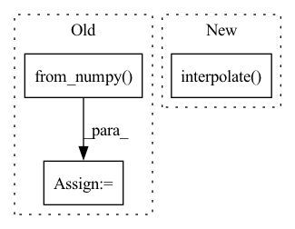

Pattern ID :21758

Before Change
temp = torch.ones(x.size(0), 1, x.size(2), x.size(3))
for i in range(x.size(0)):
mask_temp = Masks.get_ff_mask(height, width)
mask_temp = torch.from_numpy(mask_temp)
mask[i,:,:,:] = temp[i,:,:,:] * mask_temp
if x.is_cuda:
mask = mask.cuda()
result = x * (1. - mask)
After Change
elif config["mask_type"] == "mosaic":
// TODO: Matching the mosaic patch size and the mask size
mosaic_unit_size = config["mosaic_unit_size"]
downsampled_image = F.interpolate(x, scale_factor=1. / mosaic_unit_size, mode="nearest")
upsampled_image = F.interpolate(downsampled_image, size=(height, width), mode="nearest")
result = upsampled_image * mask + x * (1. - mask)
else:
raise NotImplementedError("Not implemented mask type.")
In pattern: SUPERPATTERN
Frequency: 3
Non-data size: 3
Instances
Fragment ID: 69394435
Project Name: sayednadim/global-and-local-attention-based-free-form-image-inpainting
Commit Name: 2e453ae0b658395a88acb8db67115db86d9274ea
Time: 2020-08-16
Author: smnadimuddin@gmail.com
File Name: model/mask.py
M Class Name: AnonimousClass
N Class Name: AnonimousClass
M Method Name: mask_image(2)
N Method Name: mask_image(2)
M Parent Class:
N Parent Class:
M File Name: model/mask.py
N File Name: model/mask.py
M Start Line: 40
M End Line: 48
N Start Line: 56
N End Line: 72
'>
Before Change
for i in range(x.size(0)):
mask = Masks.get_ff_mask(height, width)
mask_all.append(mask)
mask = torch.from_numpy(np.asarray(mask_all)).unsqueeze(1).float()
ones = torch.ones(x.size(0), 1, x.size(2), x.size(3))
mask = ones * mask
if x.is_cuda:
After Change
elif config["mask_type"] == "mosaic":
// TODO: Matching the mosaic patch size and the mask size
mosaic_unit_size = config["mosaic_unit_size"]
downsampled_image = F.interpolate(x, scale_factor=1. / mosaic_unit_size, mode="nearest")
upsampled_image = F.interpolate(downsampled_image, size=(height, width), mode="nearest")
result = upsampled_image * mask + x * (1. - mask)
else:
raise NotImplementedError("Not implemented mask type.")
'>
Fragment ID: 69394448
Project Name: sayednadim/global-and-local-attention-based-free-form-image-inpainting
Commit Name: aaa17ed332dc95db0f5900a43be179e26569b50c
Time: 2020-08-16
Author: smnadimuddin@gmail.com
File Name: model/mask.py
M Class Name: AnonimousClass
N Class Name: AnonimousClass
M Method Name: mask_image(2)
N Method Name: mask_image(2)
M Parent Class:
N Parent Class:
M File Name: model/mask.py
N File Name: model/mask.py
M Start Line: 40
M End Line: 49
N Start Line: 56
N End Line: 72
'>
Before Change
scale = min(scale1, scale2)
out_h, out_w = in_h * scale, in_w * scale
img = sktsf.resize(img, (in_c, out_h, out_w), mode="reflect", anti_aliasing=False) // np.float64
img = self.normalize(torch.from_numpy(img)).numpy()
// img = F.interpolate(img.unsqueeze(0), size=(round(in_h * scale), round(in_w * scale)), mode="nearest").squeeze(0)
// img = tvtsf.Normalize(mean=[0.485, 0.456, 0.406], std=[0.229, 0.224, 0.225])(img)
return img_path, img, img.shape[1:]
After Change
scale1 = 600 / min(in_h, in_w)
scale2 = 1000 / max(in_h, in_w)
scale = min(scale1, scale2)
img = F.interpolate(img.unsqueeze(0), size=(round(in_h * scale), round(in_w * scale)), mode="nearest").squeeze(0)
img = tvtsf.Normalize(mean=[0.485, 0.456, 0.406], std=[0.229, 0.224, 0.225])(img)
return img_path, img, img.shape[1:]
'>
Fragment ID: 69394440
Project Name: pangkun248/faster-rcnn-pytorch
Commit Name: 9f846e1554bc021a8736389744969d0dd7f97321
Time: 2021-08-30
Author: 39581901+pangkun248@users.noreply.github.com
File Name: dataset.py
M Class Name: ImageFolder
N Class Name: ImageFolder
M Method Name: __getitem__(2)
N Method Name: __getitem__(2)
M Parent Class: Dataset
N Parent Class: Dataset
M File Name: dataset.py
N File Name: dataset.py
M Start Line: 110
M End Line: 119
N Start Line: 91
N End Line: 99